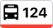
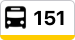
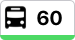
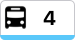
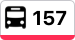

Washington & State Bus Station

9 min
4 min

Buses at this station

Navy Pier
Arrives in 4 min at
9:45 AM
103rd/Stony Island
Arrives in 9 min at
9:50 AM

Devon/Clark
Arrives in 10 min at
9:51 AM

Randolph/Harbor Dr
Arrives in 14 min at
9:55 AM
Buses currently out of service

Cottage Grove
Buses resume at
12:10 AM
Madison
Buses resume at
12:10 AM
